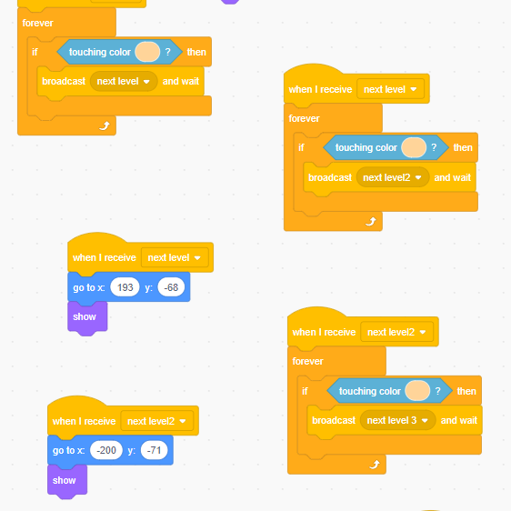
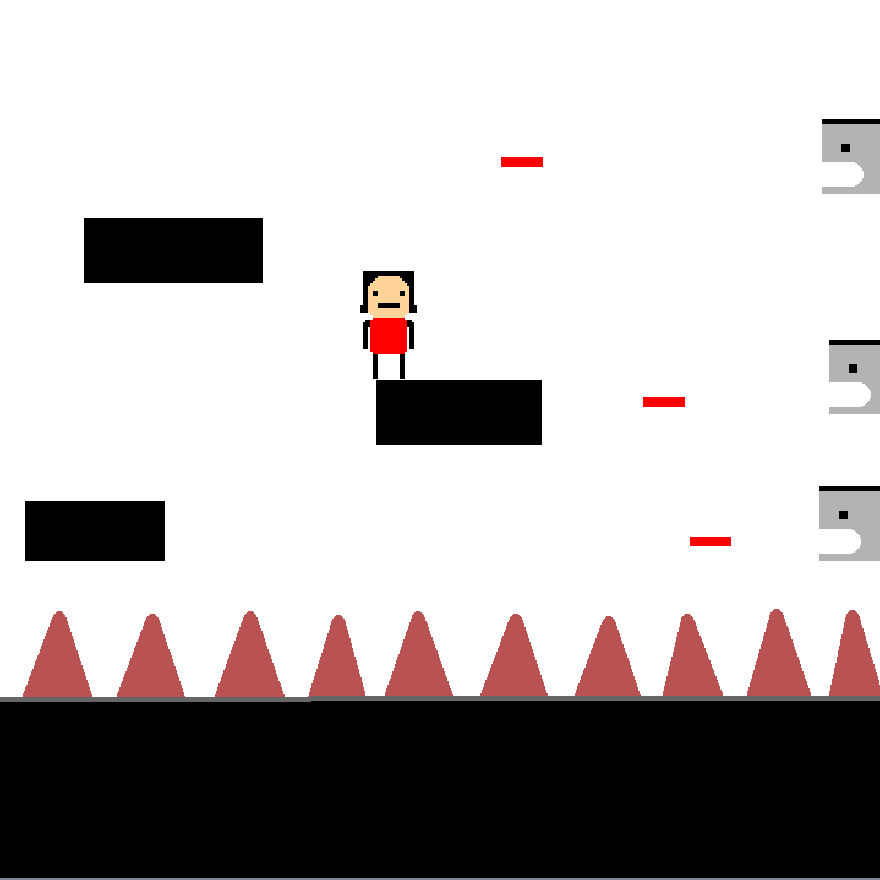
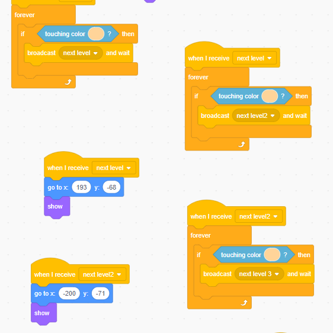
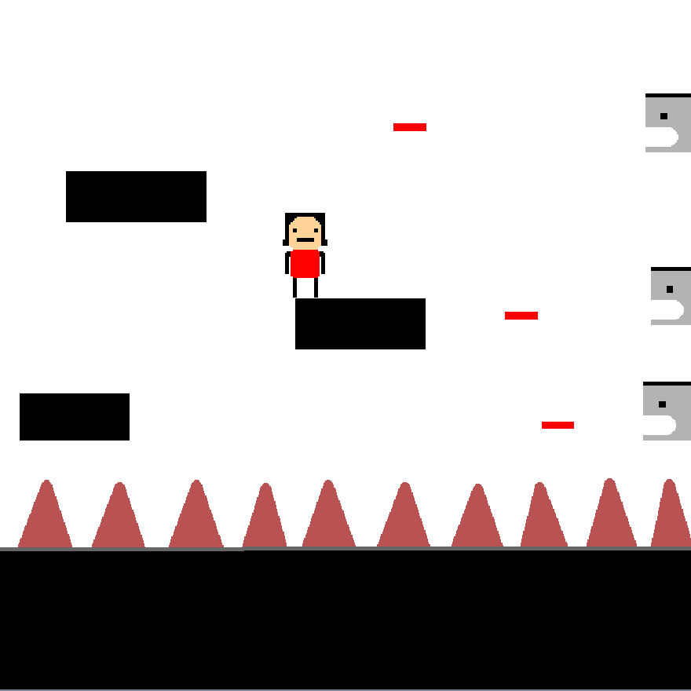
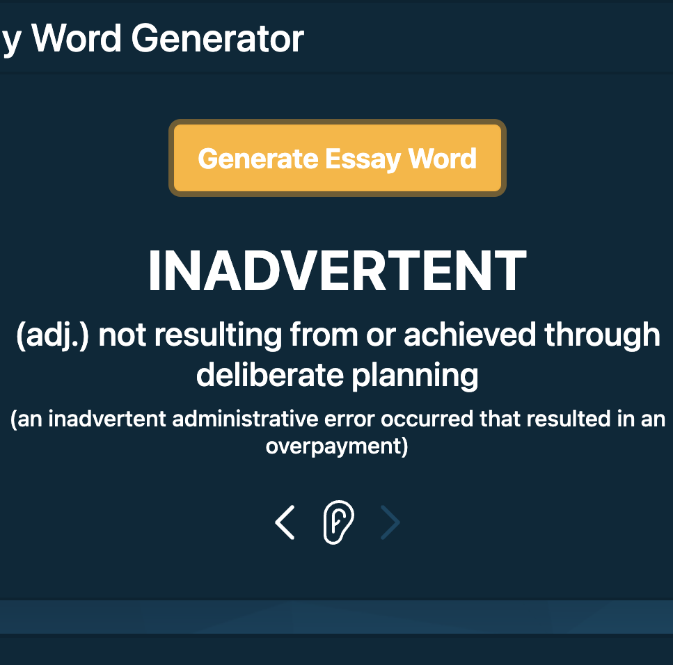
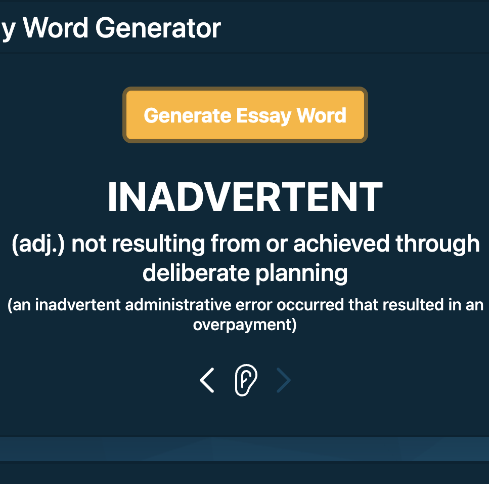

BayRise Computer Science Enrichment Classes
We offer free computer science enrichment classes to youths and young adults who want more exposure to the subject, empowering them with the skills and knowledge necessary to succeed in the digital age. We strive to foster a supportive and inclusive learning environment where students can explore their passions, develop critical thinking skills, and gain confidence in their abilities. By bridging the opportunity gap through accessible education, we aim to create a more equitable future for all.
Age Range
Because computer science has such a broad age range, we teach younger kids (9-12), younger teens (13-15), and even young adults (16-20)
Who we work with
We teach our classes wherever we think kids or young adults can benefit from these added learning opportunities. We've partnered with schools, other non-profit organizations, and even groups of individuals. We also run online workshops for anyone that is interested in furthering their computer science journey.
Pricing (Free!)
Our classes are completely free, and all materials are provided because we believe that everyone deserves the opportunity to learn and succeed. In fact, we leave a laptop with every group of disadvantaged kids we teach. That way, they can continue their projects and learning even when we aren't there.
Sign Up
If your group is interested in any of our classes or you're an individual who wants to sign up, reach out to us here.
Curricula
Younger Kids (9-12):
Our classes offer an exciting introduction to coding for younger kids. We use Scratch, a user-friendly block coding language created by the MIT Media Lab, to teach basic game development concepts such as character design, level design, and using online assets.
As students progress, they'll learn fundamental programming concepts like loops, conditionals, and variables, through creating their own simple, and easy-to-manage games.
By taking this approach, we make coding fun and interactive while helping kids develop problem-solving, critical thinking, and creativity skills that will benefit them in many areas of life.
 

Younger Teens (13-15):
Our classes for younger teens are a great way to learn Python programming in a fun and accessible environment. Python is a widely used language that's known for being easy to learn and understand.
We start by introducing our students to the basic syntax and data types in Python, as well as essential programming concepts like loops, conditionals, and variables. As they progress, they'll move on to more advanced topics like using APIs and web scraping.
Our students get to work on simple, but exciting projects, such as building their own chatbot or creating a weather app, which keeps them motivated and interested. By the end of the program, they'll have a solid grasp of Python programming and the confidence to continue exploring on their own.
Young Adults (16-20):
Web development is a highly applicable skill in today's industry, and that's why we teach it to young adults in our classes. We focus on teaching the essential building blocks of web development: HTML, CSS, and Javascript, in a way that's easy to understand and apply.
Throughout the class, students will learn how to create the structure of a website using HTML, including tags, attributes, and elements. They'll also learn how to style and layout web pages using CSS, and how to create interactive elements on the website using Javascript.
Our students will work on exciting projects like building responsive websites and creating fun, interactive games, gaining practical experience along the way. By the end of the program, they'll have a solid understanding of HTML, CSS, and Javascript, making them well-equipped to take on more advanced web development concepts. This class is the perfect starting point for anyone interested in pursuing a career in web development.
 
